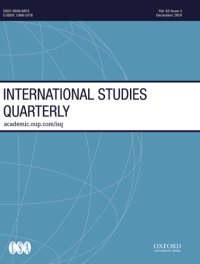

收录于合集 #新刊速递 123个


期刊简介

《国际研究季刊》（International Studies Quarterly）是国际研究协会的旗舰期刊，由牛津大学出版社每年发行四期，旨在发表与国际研究中重要理论性、实证性、规范性主题相关的领先学术成果。根据Journal Citation Reports的数据，2018年该期刊的影响因子为2.172。
本期编委
【编译】 房宇馨 张曼娜 刘瑛琛 张晋岚 刘潇昱 蔡宇
【审校】 刘瑛琛 金磊 蔡宇 金琳 李源
【排版】 李佳霖

本期目录
1. Sectors, Pollution, and Trade: How Industrial Interests Shape Domestic Positions on Global Climate Agreements
行业、污染和贸易： 行业利益如何塑造一国在全球性气候协议上的国内立场
2. Make Love, Not War: Do Single Young Men Cause Political Violence?
只做爱，不作战： 单身青年真的会导致政治暴力吗？
3. Monetary Power Reconsidered: The Struggle between the Bundesbank and the Fed over Monetary Leadership
重思货币权力： 德意志联邦银行与美联储对货币领导权的争夺
4. Legitimacy and the Cognitive of International Institutional Change: The Case of Regional Paliamentarization
合法性与国际制度变迁的认知:以区域议会化为例
5. The Dark Side of Cooperation: International Organizations and Member Corruption
合作的阴暗面： 国际组织与成员国腐败
6. The Cause and Effects of Leaks in International Negotiation
国际谈判中泄密的原因和影响
摘要译文
1.
行业、污染和贸易：行业利益如何塑造一国在全球性气候协议上的国内立场
【题目】 Sectors, Pollution, and Trade: How Industrial Interests Shape Domestic Positions on Global Climate Agreements
【作者】 Federica Genovese，英国埃塞克斯大学政府管理系高级讲师
【摘要】 人们通常认为，减轻污染所耗成本是一国国内是否支持国际气候合作的主要障碍。特别是，一些学者曾主张，因为需要承受减轻污染的负担，企业往往会牵制政府，使之在全球性气候协议上持消极立场。但笔者认为上述观点尚需斟酌：污染治理的成本因素极少会对国家在全球气候协定上的偏好造成绝对影响。相反，如果受贸易风险暴露影响，某个行业的污染水平更有可能影响一国在气候问题上的合作偏好。贸易导向型公司可能无法具备气候管控的能力，因此如果污染严重，它们对国家间的气候合作理应更加敏感。如果污染较轻，贸易导向型公司可能会支持气候合作，因为在效率提高的前提下，公司更能适应气候监管的负担。这样的相互作用而后便会影响政府在全球气候政治中的立场。利用来自联合国气候谈判中商务报告和国家信息的原始数据，笔者对其提出的这一针对特定行业的观点进行了检验。笔者发现，随着贸易开放行业中污染排放量的增加，这些行业中的企业更有可能反对气候协定，这与其观点相符。另外笔者还发现，在高排放行业实行贸易开放的国家，政府对于气候合作的意愿较低。这一发现对于研究环保协定中的国内政治因素和全球公共物品供应中的分配具有启示意义。
It is usually assumed that the cost of abating pollution is the main deterrent of domestic support for international climate cooperation. In particular, it is argued that, due to the burden of pollution abatement, businesses commonly constrain governments, which then take less cooperative positions on global climate agreements. I suggest that this argument needs further qualification: pollution-related costs rarely have unconditional effects on preferences for global climate agreements. Instead, a sector’s pollution level is more likely to influence preferences for climate cooperation if mediated by its trade exposure. If pollution is high, firms in high-trade sectors may be less able to absorb climate regulation, and hence they should be more sensitive to climate cooperation. If pollution is low, firms in high-trade sectors may support climate cooperation, because by being more efficient they are more capable of adjusting to regulation. These dynamics should then affect governmental positions on global climate politics. I test my sectoral argument with original data from business statements and national communications at the United Nations climate negotiations. In line with my argument, I find that businesses in trade open sectors are more likely to oppose climate agreement as their sector’s emissions increase. I also find that in countries where high-emission sectors are open to trade governments have low preferences for climate cooperation. The findings have implications for the domestic politics of environmental agreements and the distributive politics of global public good provision.
【编译】 房宇馨
【校对】 刘瑛琛
2.
只做爱，不作战：单身青年真的会导致政治暴力吗？
【题目】 Make Love, Not War: Do Single Young Men Cause Political Violence?
【作者】 Tyler Kustra，威瑟海德国际中心与哈佛大学社会科学定量研究所访问学者
【摘要】 本文对单身会驱使青年男性实施政治暴力的理论提出了质疑。研究发现，虽然一国青年男性的比例在统计学意义上对该国政治暴力程度有着显著影响，但与这些男性是否已婚没有额外关系。与之矛盾的是，个人层面的证据表明，绝大多数的政治暴力是由青年未婚男性实施的。然而，叛乱和恐怖分子所占的比例对国家层面的结果影响不大。作者认为，参与政治暴力导致青年男性单身的情况对一国单身男青年的比例的影响微乎其微，从而解释了为什么婚姻状况与国家层面的政治暴力无关，而为什么个人层面的证据表明大多数恐怖分子与游击队员都是单身。
This article calls into question the theory that being single drives young men to commit political violence. It finds that, while the proportion of young men in a country has a statistically significant impact on the level of political violence in the country, whether or not these men are married has no additional impact. The result may appear to contradict the individual-level evidence that shows that young, unmarried men commit the overwhelming majority of political violence. Rebels and terrorists, however, make up only a small part of a country’s population. If participating in political violence caused young men to be single, this would have a negligible impact on a country’s proportion of single young men, thereby explaining why marital status is uncorrelated with political violence at the national level. It would also explain why the individual-level evidence shows that most terrorists and guerillas are single.
【编译】 张曼娜
【校对】 金磊
3.
重思货币权力：德意志联邦银行与美联储对货币领导权的争夺
【题目】 Monetary Power Reconsidered: The Struggle between the Bundesbank and the Fed over Monetary Leadership
【作者】 Arie Krampf，希伯来大学讲师
【摘要】 本文重新审视了传统的货币权力理论，以解释德意志联邦银行（以及德国）在20世纪80年代末90年代初基于规则的低通胀制出现过程中所扮演的角色。本文提出的货币权力理论则借鉴了制度性权力的理念与货币领导权的概念（制度性货币权力也被理解为一国吸引外资的能力），从而解释了国内制度性特征和偶然的历史事件影响一国外部货币权力的方式。作者应用这一理论追溯了1989年德意志联邦银行“一意孤行”的货币紧缩政策引发一系列跨国事件的过程，认为这一系列事件以符合德国利益的方式改变了国际货币秩序，即国际货币秩序从由美国主导的实用主义国际宏观经济协调路径转变为基于规则的低通胀目标路径。本文认为，尽管存在着美联储和美国财政部的反对，国际货币秩序还是发生了以上变化。本文对研究美国霸权的衰落和国际制度的变迁机制都有所贡献，同时也为当前学术界争论基于规则的世界秩序是否可能衰落提供了新的线索。
This article reexamines the theory of monetary power to explain the role of the Bundesbank (and Germany) in the emergence of the rules-based low inflation regime in the late1980s and early 1990s. Our theory of monetary power draws on the notion of institutional power and the concept of monetary leadership, understood as the capacity to attract foreign investment, and thereby explains how domestic institutional features and contingent historical events affect countries’ external monetary power. This theory is employed to trace how the Bundesbank go-it-alone strategy in 1989 triggered a cross national sequence of events that changed the international monetary order in a way that was consistent with the German interests. The transition was marked by a shift from the US-led pragmatist approach of international macroeconomic coordination to a rules-based approach founded on the principle of low inflation targeting. The article argues that this change took place despite the opposition of the Fed and the US Treasury. The article contributes to the literature on the decline of US hegemonic power as well as the literature on the mechanism of institutional change at the international level. It also sheds new light on current debates about the putative decline of the rules- based world order.
【编译】 刘瑛琛
【校对】 蔡宇
4.
合法性与国际制度变迁的认知:以区域议会化为例
【题目】 Legitimacy and the Cognitive of International Institutional Change: The Case of Regional Paliamentarization
【作者】 Tobias Lenz tobias，哥根廷大学全球治理与比较地区主义和汉堡德国全球与区域研究助理教授；Alexandr Burilkov，布拉格大都会大学研究员和柏林自由大学政治学教授
【摘要】 合法性是如何以及在什么条件下会影响国际制度变迁的进程? 本文从合法性的一致性模式与认知模式中推导出合法性驱动制度变迁的三种机制，即制度机制、规范机制与认知机制。文章详细阐述并评价了这三种因果机制，认为认知因素是一个重要但迄今被忽视的、基于合法性的变革来源。本文利用1950年至2010年间36个区域组织建立议会机构的数据对以上三种机制进行评估。作者发现赋予超国家秘书处权力、与欧盟进行接触以及有组织的邻国朝议会化方向的发展，都增加了区域议会化的可能性。区域议会化是指一个议会机构获得正式参与区域组织决策资格的过程。文章通过案例实证表明基于认知参照的合法性判断是国际制度变迁的重要来源，合法性变化有助于解释制度变迁会在何时发生以及何种制度变迁会产生。本文以东南亚国家联盟的议会化现象为例，阐明其潜在的认知模仿机制。
How and under what conditions does legitimacy affect processes of international institutional change? We explicate three mechanisms of legitimacy-driven institutional change that we derive from two distinct models of legitimacy. This article specifies and evaluates three causal mechanisms by which variation in legitimacy induces institutional change in international organizations (IOs) and argues that an important, yet hitherto neglected, source of legitimacy-based change is cognitive in nature. Using survival analysis, we evaluate these mechanisms with a novel dataset on the establishment of parliamentary institutions in thirty-six regional organizations between 1950 and 2010. We find that the empowerment of supranational secretariats, engagement with the European Union, and parliamentarization in an organization’s neighborhood increase the likelihood of regional parliamentarization. Regional parliamentarization is the process by which a parliamentary institution acquires formalized access to participate in the decision-making of a regional organization. This suggests that legitimacy judgments that draw on cognitive referents provide an important source of international institutional change. We argue that variation in legitimacy can help to explain when institutional change occurs and what kind of institutional change will be attempted. We illustrate the underlying cognitive emulation mechanism with a case study of parliamentarization in the Association of Southeast Asian Nations.
【编译】 张晋岚
【校对】 金琳
5.
合作的阴暗面：国际组织与成员国腐败
【题目】 The Dark Side of Cooperation: International Organizations and Member Corruption
【作者】 Emilie M. Hafner-Burton，加州大学圣迭戈分校全球政策与战略学院教授；Christina J. Schneide，加州大学圣迭戈分校政治学副教授
【摘要】 政治腐败在世界上许多地方都十分猖獗，且具有破坏性。越来越多的国际组织声称将通过善治规范和规则来解决这一问题，比如制定反腐标准并实施反腐行动。然而，国际组织是否能遏制腐败仍有待考量。本文认为国际组织成员国的性质决定了腐败是否会被容忍，也决定了正式的反腐规则能够在多大程度上有效地打击腐败。首先，许多腐败成员国不支持用善治规范或规则对其他成员国进行约束，这使得对腐败的惩罚失去公信力。其次，领导者可能从其他成员国那里看到腐败的价值，并学会以同样的方式行事。本文搜集了各类数据，包括最新的国际组织反腐决议，并通过各种评估策略证明：(1)一个国家如果加入一个成员国明显腐败的国际组织，会更有可能贪污腐败，且随着时间的积累而愈发严重。(2)同时这种对腐败的容忍甚至出现在那些已经正式通过反腐决议的国际组织中，这使得善治规则在被贪腐主导的组织中基本成为空谈。
Political corruption is rampant in—and destructive to—many parts of the world. A growing number of international organizations (IOs) claim to address the problem by encouraging good governance norms and rules, such as anti- corruption standards and practices. Whether membership in IOs dampens corruption, however, is unclear. The central argument is that the characteristics of IO membership determine both whether corruption is tolerated and the extent to which formal anti-corruption rules effectively combat the problem. First, groups of corrupt states are reticent to enforce good governance norms or rules against other IO members, rendering punishment for corruption incredible. Second, leaders may witness the value of corruption to their IO peers and learn to act the same way. Using a variety of data sources and estimation strategies, including new data on IO anti-corruption mandates, the authors demonstrate that: (1) countries that participate in member-corrupted IOs are significantly more likely to engage in corruption themselves—and experience an increase in corruption over time—than are countries that participate in less corrupt IOs; and (2) this tolerance for corruption occurs even within IOs that have adopted formal anti-corruption mandates, rendering good governance rules largely cheap talk among organizations governed by corrupt principles.
【编译】 刘潇昱
【校对】 金磊
6.
国际谈判中泄密的原因和影响
【题目】 The Cause and Effects of Leaks in International Negotiation
【作者】 Matthew Castle，新西兰惠灵顿维多利亚大学历史、哲学、政治科学与国际关系学院讲师；Krzysztof J. Pelc，加拿大麦吉尔大学政治科学系助理教授
【摘要】 国际谈判以保密为基础。尽管如此，对谈判文件的非权威性泄露日渐频繁。谈判文件泄密背后的驱动因素是什么？泄密对国家间谈判的影响又是什么？特别是，泄密是进攻性的还是防御性的，也就是说，其目的在于推动各方进行更积极的决策，还是旨在收回已经做出的决策？由于贸易谈判具有反复性，其所能提供的经验证据是其他案例不可比拟的，因此本文以贸易谈判为背景考察了以上问题。为此，本文集合了此类数据库，统计了2006～2015年间120例谈判泄密的案例。作者发现，谈判泄密的案例正不断增加。泄密往往集中于新型法律条例，并不成比例地集中于防御性层面（即泄密满足了那些企图限制已做出的承诺的行为体）。世界谈判中泄密的案例中占大多数发生在欧盟。通过运用政党宣言数据(party manifesto data)跟踪欧盟内部的意识形态立场，作者发现泄露往往与欧盟政党内对经济自由化的反对有关。同时，泄密在转移公共舆论方面十分有效。针对欧盟与加拿大之间的一场谈判泄密，作者审查了这场谈判中贸易官员间的内部通信以及随后有关泄密的媒体报道。作者发现，与官方发布的谈判文本相比，泄露的谈判文本将带来更多的负面报道，即便两者内容相同。总而言之，政治行为体有策略地泄露信息，以便动员国内群众，从而使谈判结果达到他们的预期。
International negotiations are founded on secrecy. Yet, unauthorized leaks of negotiating documents have grown common. What are the incentives behind leaks, and what are their effects on bargaining between states? Specifically, are leaks offensive or defensive: are they intended to spur parties to make more ambitious commitments, or are they more often intended to claw back commitments made? We examine these questions in the context of trade negotiations, the recurring form of which affords us rare empirical traction on an otherwise elusive issue. We assemble the first dataset of its kind, covering 120 discrete leaks from 2006 to 2015. We find that leaks are indeed rising in number. Leaks are clustered around novel legal provisions and appear to be disproportionately defensive: they serve those actors intent on limiting commitments made. The European Union (EU) appears responsible for the majority of leaks occurring worldwide. Using party manifesto data to track changing ideological positions within the EU, we find that the occurrence of leaks correlates with opposition to economic liberalization within the average EU political party. Moreover, leaks appear effective in shifting public debate. We examine trade officials’ internal communications and media coverage in the wake of a specific leak of negotiations between Canada and the EU. A given negotiating text attracts more negative coverage when it is leaked than when the same text is officially released. In sum, political actors leak information strategically to mobilize domestic audiences toward their preferred negotiating outcome.
【编译】 蔡宇
【校对】 刘瑛琛

扫下方二维码查看往期精彩
【新刊速递】第01期 | Review of International Studies Vol.45, No.4,
2019
【新刊速递】第02期 | International Relations Vol.33, No.3,
2019
【新刊速递】第03期 | International Organization Vol.73, No.3,
2019
【新刊速递】第04期 | World Politics, Vol.71, No.4,
2019
【新刊速递】第05期 | European Journal of International
Relations
【新刊速递】第06期 | Security Studies, Vol.28, No.4,
2019
【新刊速递】第07期|International Secur.ity, Vol 44, No. 2, 2019 |
国政学人
【新刊速递】第8期| Cambridge Review of International
Affairs,Vol.32,No.4
【新刊速递】第09期| International Relations of Asia-Pacific
Vol.19,No.3
【新刊速递】第10期 | International Studies Review, Volume.21, No.3,
2019
【新刊速递】第11期|Cooperation and Conflict, Vol. 54, No. 4,
2019
【新刊速递】第12期 | International Affairs, Vol.95,
No.6，2019
【新刊速递】第13期|Chinese Journal of International Politics, No.4,
2019
【新刊速递】第14期|Chinese Journal of International Politics, No.3,
2019
【新刊速递】 第15期 | International Organization, No.4,
2019

国政学人
支持学术公益与知识传播
微信扫一扫赞赏作者 __赞赏
已喜欢，对作者说句悄悄话
取消 __
发送给作者
发送
最多40字，当前共字
上一页 1/3 下一页
长按二维码向我转账
支持学术公益与知识传播
受苹果公司新规定影响，微信 iOS 版的赞赏功能被关闭，可通过二维码转账支持公众号。